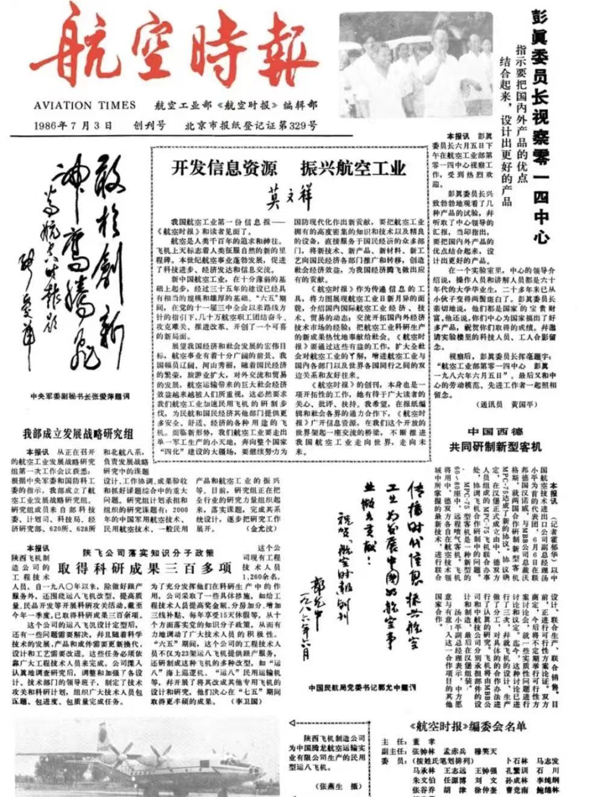

Chapter Two · Learning to Notice
The Red Pen
Every morning, he arrived thirty minutes early. He spread the newspaper across his desk and studied how each story was built.
How He Read the Newspaper
This real 1986 front page shows the kind of printed material he studied.
Choose red marks 1–3 on the newspaper to see how he read it.

Step Two · What He Saved in His Folders
How the Newspaper Became His Writing School
After studying an article, he physically saved the parts that could teach him something.
- 01ReadStudy the newspaper before work.
- 02MarkUnderline useful writing with a red pen.
- 03Cut OutRemove the articles he wanted to remember.
- 04SavePaste each clipping into a folder.
Over the years, the folders grew thick with examples. Before online tutorials or searchable archives, they became his personal writing school.